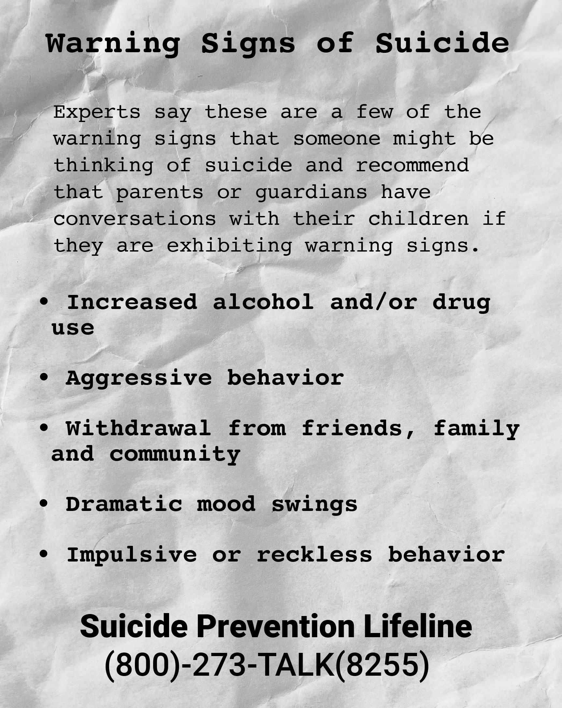

Children in Peril
Arkansas child gun-death rate among nation's 10 highest.
Toddler Tacari Briggs was one of the youngest.
By Ginny Monk
Fingers clumsy from sleep, Delana Aguire accidentally answered the 2 a.m. call. She softly said hello to avoid waking the two children next to her.
The caller whispered something Aguire couldn’t quite understand, then hung up.
A barrage of bullets barrelled through the bedroom. Three hit Aguire.
Certain the shots were meant for her, Aguire jumped up and stumbled into the hallway, desperate to keep the slugs away from Tacari, 18 months, and Noah, 4.
Aguire was airlifted from Newport to a hospital in Little Rock. Emergency responders called one for Tacari, too, but it was too late for the toddler, who was pronounced dead soon after the February 2013 shooting.
Tacari became one of the youngest victims of gun violence in Arkansas from 2012 to 2017, according to a data analysis by the Arkansas Democrat-Gazette.
This story is one of an occasional series about what that data show regarding deaths of children in Arkansas. Other articles will examine suicide, suffocation and other unnatural, often preventable causes of child fatalities.
The newspaper examined the circumstances surrounding the deaths of nearly 1,500 children from 2012 to 2017 and found 81 died of gunshots.
Arkansas children died from gunshots from 2012 to 2017
*Suicide victims' names are withheld.
During the same period, however, federal mortality data showed 140 Arkansas children died from gunshots. The discrepancy can be explained by the failure or inability of some coroners and prosecutors to provide the Democrat-Gazette with requested records and differences in the way data are reported to the Centers for Disease Control and Prevention.
Arkansas ranked ninth in the nation for the rate of children who die by gunfire: 3 per 100,000, averaged from federal data for 1999-2018. Washington, D.C., had the highest rate, at 8.8. per 100,000.
The CDC’s 2018 death statistics, which were published after the newspaper began its data analysis, show that 23 children died from gunfire in Arkansas that year.
The ages of children in cases examined by the newspaper ranged from a 3-month-old girl whose father accidentally shot her in the head while she was in her car seat to a boy nearing his 18th birthday who killed himself.
Teenage boys constituted the largest group of those who died of gunshots, the newspaper’s data show.
Curbing the rate of child deaths from guns poses challenges for health professionals and others who seek to prevent gun violence. Education is key, and steps such as gun locks and gun safes can work, experts say.
But even when provided with gun locks, many parents won’t use them, according to research from nonprofits and interviews with local gun-violence-prevention advocates.
Arkansas Children’s Hospital is one of several groups working to decrease gun deaths and injury of children through education efforts, research and providing access to preventative tools such as gun locks.
“Everyone wants lower rates of gun violence,” said Jessica Scott, the chapter leader for Moms Demand Gun Action in America, a national advocacy group.
Children died from gunshots from 2012 to 2017
"Kids are put in danger"
Tacari was one of at least five children in the newspaper’s analysis who died in a shooting related to domestic violence.
Aguire was living with her mother in Newport when she and Tacari were shot.
In the early-morning chaos, one bullet darted through Aguire’s arm, another lodged in her buttock and a third ripped into the flesh on the back of her neck.
“Mama, he shot me!,” she called out as she fell into the hallway, where she lay bleeding until first responders arrived.
Robert Friar, Aguire’s ex-boyfriend, had been verbally and physically abusive, she said. His friends followed her to and from the grocery store. She was afraid of him.
That night, Feb. 13, 2013, he’d told her to ride to Jonesboro with him. She’d told him she would after she put her kids to bed. Her mother helped her take care of the kids — two boys and Tacari.
Aguire had used that line before, saying she’d meet Friar somewhere, then saying she’d fallen asleep when he confronted her about missing their date.
“Mama, check on my babies,” she yelled from the hallway.
Her mother, Leslie Curl, called 911 and ran into the bedroom.
Curl had chosen the name Tacari; she’d noticed the word in a magazine (she thinks it was a kind of wine) and thought it was pretty — perfect for the long-awaited daughter in the family.
Tacari liked to play with her brothers, laughed easily and when she threw temper tantrums, she would fall 0n the floor in a way that frightened her caretakers.
Their reactions were another in a litany of things that made her laugh.
The kids were quiet, and Aguire thought maybe they were both dead. Then she heard screaming and sobs.
“Mama, what’s going on?,” she cried over and over, desperate for answers.
After the shooting, Aguire sank into a deep depression.
“I didn’t even have the strength to do anything,” Aguire said. “I saw the light in my sons’ eyes disappear.
“If I can change one young lady’s life with my story, I will.”
Aguire says she’s considered writing a book about her experiences with domestic violence. She and her mother say they don’t like guns and have trouble leaving the house. They haven’t worked since Tacari died.
About 1 in 4 women and 1 in 10 men have experienced sexual violence, physical violence and/or stalking by an intimate partner during their lifetimes, according to the CDC.
About 16% of homicide victims are killed by an intimate partner, and nearly half of female homicide victims in the United States are killed by a current or former male partner, the CDC says.
“Domestic violence doesn’t just affect grown-ups,” Scott said. “Kids are put in danger by these things as well.”
Federal law bars anyone previously convicted of a domestic-violence crime from owning a gun. Thirty states and Washington, D.C. have a similar or matching law. Arkansas has no such law.
Aguire said she reported Friar’s abuse to the police repeatedly, but never went through with pressing charges. She said she didn’t feel like officers took her seriously, that they thought she was just going to go back.
“I wish I would have listened to my mama about him,” Aguire said. “But by then I couldn’t get out.”
Friar was sentenced to life in prison without parole for one count of capital murder, one count of attempted capital murder and committing a terroristic act. The Arkansas Supreme Court affirmed the sentence in October 2018.
Second-most common
Tacari was among 25 children whose deaths by gunfire coroners ruled as homicides, the newspaper’s review of available records showed. Homicides were the second-most common means of death after suicide.
Adults committed most of those homicides, although three were by other children. One was by Little Rock police officer Josh Hastings, who shot a black teenager who was allegedly breaking into a car.
The advocacy group Moms Demand Gun Action also recommends requiring background checks on all gun purchases. Arkansas law allows private sellers to skip background checks. Fourteen states and Washington, D.C., have some kind of universal background check law.
In the 2019 legislative session, Sen. Greg Leding, a Democrat from Fayetteville, proposed a bill that would allow a judge to order a person’s guns taken away if that person is deemed a threat to themselves or others. The bill, which had Moms Demand’s support, failed in committee and was referred to study.
Seventeen states and Washington, D.C. have such laws, known as red flag or extreme risk protection order laws.
Opponents in Arkansas have said such legislation infringes on due process and 2nd Amendment rights.
Leding has said he plans to bring the bill up again.
In 2018, Arkansas had the 8th-highest rate of firearm fatalities of any state at 18.9 per 100,000, according to the CDC.
“I think a lot of it is just the number of guns,” Scott said of Arkansas’ gun-death ranking. “We are a state with a long hunting tradition.”
"In that second"
About four years after Tacari’s death, 7-year-old Karma Wezowicz was shot in the head at her home in Beebe on Feb. 27.
Chad Jeremiah Owens, an acquaintance of Karma’s father Matthew Wezowicz, had stopped by their house and wanted to see Matthew’s new handgun.
While Owens was holding the weapon, the gun went off and a bullet hit Karma. She died a few days later.
Matthew and Karma were close. The two were laughing together over a video game in the moments before she was shot.
“In that second, there’s a hole in her forehead and her smile’s gone and I’m catching her,” Matthew said.
Brenda Wezowicz holds a photo of her granddaughter, Karma Wezowicz, as she sits in front of a garden dedicated to Karma. Karma was accidentally shot and died in March.
Brenda Wezowicz has planted a garden dedicated to her granddaughter Karma Wezowicz, who was accidentally shot and died in March.
Owens was sentenced to five years in prison — three years longer than the presumptive sentence for manslaughter — by Judge Robert Edwards of the 17th Judicial Circuit in August 2017. Owens had taken Valium and drunk two beers before he went over to the Wezowicz house that night, court testimony showed.
Matthew thinks the sentence should have been longer. A mandatory 10-year sentence for people who accidentally kill anyone under the age of 12 would be a powerful deterrant, he said, and make people think twice before handling a weapon in a house with a child.
“She happened to be in the line of his mistake,” he said of the night Karma was shot.
Mom’s Demand Gun Action advocates for so-called “safe storage” policy that would require parents and guardians to keep their weapons in safes or use trigger or cable locks, away from children. Eleven states have some kind of safe storage law.
A safe storage law is one Matthew says he could get on board with. He doesn’t believe in “gun control,” and still keeps guns in the apartment, but says they’re always unloaded or locked up. Sometimes, it’s both, although he keeps one locked away but loaded for protection, he said.
The foundation will soon push out a training for the workplace environment that can be accomplished over a lunch hour and a training tailored toward caretakers.
“I was one of those overprotective dads, I know I was,” he said.
In the years after Karma’s death, he’s moved, found a new job, started dating someone. She has an elementary-school-aged son.
Despite the passage of time and life changes, he said not a day goes by where he doesn’t think of his daughter.
“It doesn’t get easier,” he said. “You don’t move on, you learn to move forward with the pain.”
"Loaded and easily accessible"
While adults have been prosecuted for accidentally shooting children, few instances of children accidentally shooting themselves have resulted in criminal prosecutions of the adults who owned the guns.
Among the cases reviewed by the Democrat-Gazette in which children fatally shot themselves by accident, four resulted in criminal prosecutions: one for negligent homicide and three for manslaughter; two had additional charges of endangering a minor.
In the case of Eron Jones, a 6-year-old who found a gun when he was left alone in a car and shot himself in the eye, his aunt was prosecuted and received a one-year suspended sentence, provided she get therapy.
But in the case of Cayden Thompson, a 1-year-old who was playing with a rifle and accidentally shot himself in the face, no charges were filed.
Members of Moms Demand Gun Action attend educational events during which they hand out gun locks. Scott said the locks are usually well-received.
But Hope Mullins, an injury prevention specialist at Arkansas Children’s Hospital, said the hospital conducted a focus-group study last year in which parents were given gun locks. Researchers checked in with participants a year after and found that almost none of them were using the locks.
“They wanted one handgun loaded and easily accessible,” Mullins said.
Parents also rejected guns with triggers that require a fingerprint to fire because they wanted their children to have access to the weapons in case of break-ins, she said.
Congress froze funding for gun violence research in 1996, but late last year, voted to provide $12.5 million each to the CDC and the National Institutes of Health for such research.
Researchers at Arkansas Children’s are going to collaborate with researchers in Tennessee and Alabama, which also are largely rural.
“We’re in the infancy,” Mullins said of the research. “We don’t know what’s going to work.”
Mullins and Scott both said they want to normalize the practice of asking about weapons in the home before children visit.
Scott said she always asks about guns in the home before her daughter has play dates.
“We ask about food allergies, we ask about other things, but we don’t ask about guns,” she said.
"Guns are fatal"
Just over half the cases of suicide examined by the newspaper were by guns. Of 64 suicides, 34 were by gunshots. Suicide was also the most common way for a child to die by gunfire.
“A lot of that has to do with access,” Scott said. ” … Guns are fatal the majority of the time.”
In the case of Eron Jones, a 6-year-old who found a gun when he was left alone in a car and shot himself in the eye, his aunt was prosecuted and received a one-year suspended sentence, provided she get therapy.
Guns are among the most lethal methods of suicide. Most firearms used in suicides of minors belong to the kids’ parents, according to research from the Means Matter Campaign at Harvard University.
Securing guns and storing them separately from ammunition are among recommendations Arkansas Children’s health professionals make to parents of children who are discharging from the hospital after a suicide attempt, Mullins said.

Ladeana Bell, a licensed therapist and volunteer with the Arkansas chapter of the American Foundation for Suicide Prevention, said she makes the same recommendation to parents when she’s treating their children for suicidal ideations or depression.
But, Bell added, she thinks more parents should know to talk to their kids about suicide so they are aware what is going on with the children.
“We need to talk to teens,” she said. ” … We need people to really understand that it’s [suicide] not ever caused by one thing.”
Anyone experiencing suicidal thoughts can call the National Suicide Prevention Hotline at (800) 273-8255 or the Arkansas Crisis Hotline at (888) 274-7472.
To produce these articles, Arkansas Democrat-Gazette reporter Ginny Monk reviewed thousands of pages of documents, photographs and videos obtained from county coroners, local police departments, news archives and state prosecutors.
Information gleaned from these sources enabled Monk to build a database with details about more than 1,500 deaths of minors from 2012 to 2017. Data from 2018 and 2019 were unavailable at the time this series was produced.
Monk submitted public records requests to every prosecutor and county coroner in the state. Some prosecutors said they no longer had case files for some cases. A few coroners provided only redacted records and some did not provide all the records for the time period requested, saying their predecessors had taken records home with them.
The database includes demographic information, contacts the children had with Arkansas Department of Human Services workers before their deaths, details about the circumstances of their deaths and any criminal charges filed in their deaths. It includes all causes of deaths, but does not include miscarriages or stillborn babies unless charges were filed in those cases — a rare occurrence.
Monk analyzed this data to determine which cases were ruled the result of abuse or neglect or whether the children were in foster care at the time of their deaths.
She then conducted interviews with current and former investigators, family members, health specialists and experts in child abuse and neglect.
Support for Monk’s reporting on this project also came from the Fund for Journalism on Child Well-Being, a program of the USC Annenberg Center for Health Journalism at the University of Southern California.